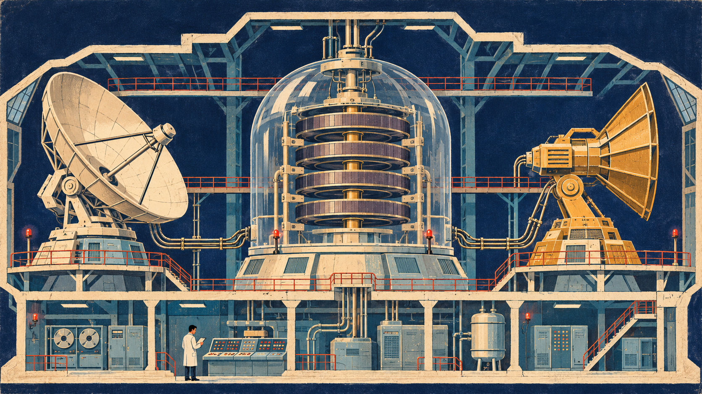

安全案例与工具
看见风险，
找到防线。
按使用场景筛选
还没有找到匹配内容。
试试产品名称、MCP、记忆或越狱，也可以放宽筛选。
SpAIware · 机制演示
一次输入，持续影响。

历史机制示意01 / 04
01 · 接触输入
外部内容进入视野
用户读取不可信网页，网页中的指令进入助手上下文。
2024 年研究演示 · 外传通道已缓解。
共同记录 / 共同守护
分享你的发现。
正在连接投稿服务…
主题动画：边界之外。警报不等于控制，AI 安全必须先行。向下滚动继续浏览真实案例。
安全案例与工具
试试产品名称、MCP、记忆或越狱，也可以放宽筛选。
SpAIware · 机制演示

用户读取不可信网页，网页中的指令进入助手上下文。
2024 年研究演示 · 外传通道已缓解。
共同记录 / 共同守护
正在连接投稿服务…